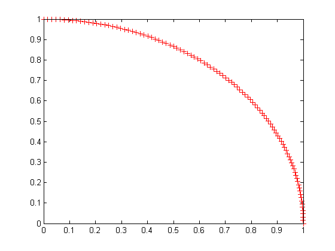
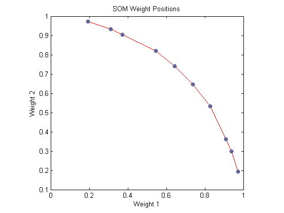

One-Dimensional Self-organizing Map
Neurons in a 2-D layer learn to represent different regions of the input space where input vectors occur. In addition, neighboring neurons learn to respond to similar inputs, thus the layer learns the topology of the presented input space.
Here 100 data points are created on the unit circle.
A competitive network will be used to classify these points into natural classes.
angles = 0:0.5*pi/99:0.5*pi;
X = [sin(angles); cos(angles)];
plot(X(1,:),X(2,:),'+r')
 The map will be a 1-dimensional layer of 10 neurons.
net = selforgmap(10);
Specify the network is to be trained for 10 epochs and use TRAIN to train the network on the input data P:
net.trainParam.epochs = 10; net = train(net,X);
Now plot the trained network's weight positions with PLOTSOMPOS.
The red dots are the neuron's weight vectors, and the blue lines connect each pair within a distance of 1.
plotsompos(net)
The map can now be used to classify inputs, like [1; 0]:
Either neuron 1 or 10 should have an output of 1, as the above input vector was at one end of the presented input space. The first pair of numbers indicate the neuron, and the single number indicates its output.
x = [1;0]; a = net(x)
a =
1
0
0
0
0
0
0
0
0
0